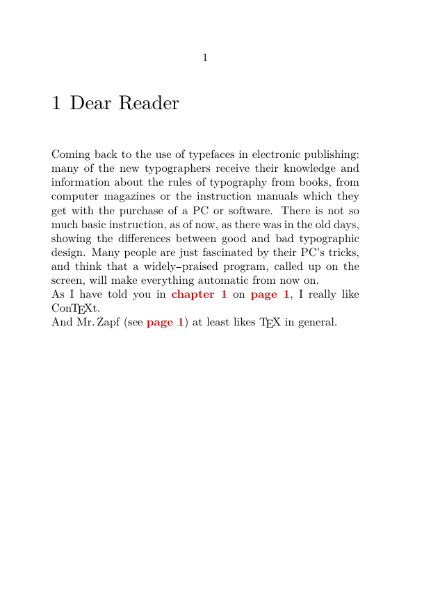
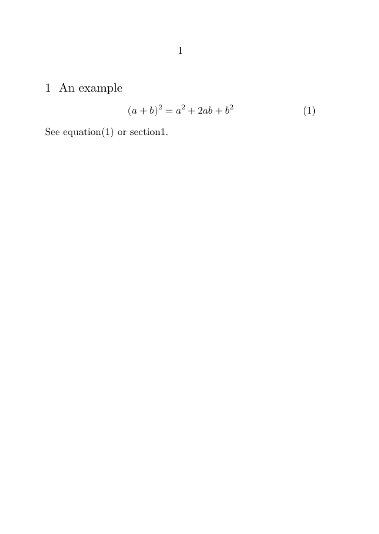

References in ConTeXt · References, notes and floats · References · Visual debugging · URLs and external links · Cross Referencing module
🚧 This page is currently being revised and reconstructed.
Its structure, examples, and explanations are being updated for current ConTeXt and LuaMetaTeX. Please feel free to edit, correct, or improve this page while the revision is in progress.
What this page is about
ConTeXt provides a built-in system for assigning stable identifiers to document objects or locations and referring to them elsewhere.
A reference may retrieve a structural number, a page number, a title, or other information. PDF interaction can then make that reference clickable.
No third-party module is required for ordinary ConTeXt cross-references.
Contents
- 1 1. The reference model
- 2 2. First working reference
- 3 3. Targets and stable identifiers
- 4 4. Retrieving information from a reference
- 5 5. A simple example with an arbitrary page target
- 6 6. Interaction and PDF links
- 7 7. Debugging references
- 8 8. Defining reusable reference formats
- 9 9. Structural prefixes in references
- 10 10. Changing separators in referenced prefixes
- 11 11. Heading punctuation and reference punctuation
-
12
12. References to another document
- 12.1 12.1. Prepare the referenced document
- 12.2 12.2. Register the external document
- 12.3 12.3. Refer to the document
- 12.4 12.4. Refer to a target inside the external document
- 12.5 12.5. Same-document and external-document references
- 12.6 12.6. Files in other directories
- 12.7 12.7. Products and components
-
13
13. Troubleshooting unresolved references
- 13.1 13.1. Does the target exist?
- 13.2 13.2. Does the identifier match exactly?
- 13.3 13.3. Are you asking for the right property?
- 13.4 13.4. Is interaction relevant to the problem?
- 13.5 13.5. Is the target in another document?
- 13.6 13.6. Has the external document been compiled?
- 13.7 13.7. Use visual debugging
- 14 14. Related reference mechanisms
- 15 15. Command reference
- 16 16. Mental map
- 17 17. Where to go next
- 18 18. Related pages
1. The reference model
Cross-referencing is easier to understand if four things are kept separate:
- the target — a document object or position;
- the reference identifier — a stable name assigned to that target;
-
the
representation
— what a command such as
\in,\at, or\aboutprints; - the optional interactive link — PDF navigation added by ConTeXt.
A useful mental model is:
document object or position
|
v
reference target
|
v
stable identifier
sec:introduction
|
+-----+------+------+
| | |
v v v
\in \at \about
| | |
number/value page title/text
\ | /
\ | /
+----------+----+
|
optional interaction
|
v
clickable PDF link
Reference structure and interaction are different
A reference works as a document reference even when PDF interaction is disabled.
\setupinteraction[state=start] adds navigation to the resulting
PDF; it does not create the logical relationship between the target and its
reference.
1.1. Where this page fits
This page combines orientation, explanation, and small working examples.
The surrounding documentation has different roles:
| Need | Where to look |
|---|---|
| Understand the reference model | This page |
| Create ordinary references | Sections 2–6 below |
| Format structural references | Sections 8–11 below |
| Debug a large reference system | References — Visual debugging |
| Work with URLs and web links | URLs and external links |
| Look up exact command syntax | The corresponding Command/* pages
|
| Use a specialized third-party interface | Cross Referencing module |
The documentation can therefore be read as:
orientation / explanation
|
v
understand the model
|
+--------> practical examples
|
+--------> command reference
|
`--------> specialized mechanisms
2. First working reference
Structural commands can define a reference at the same time as they create the document object.
For example:
-
\setupinteraction [state=start] \setuppapersize[A6] \starttext \startchapter [title={Dear Reader}, reference={ch:preface}] I really like ConTeXt. \stopchapter As I told you in \in{chapter}[ch:preface] on \at{page}[ch:preface], I really like ConTeXt. \stoptext
The chapter creates the target:
reference={ch:preface}
The stable identifier is:
ch:preface
The same target can then be queried in different ways.
This:
\in{chapter}[ch:preface]
asks ConTeXt for its structural number, while:
\at{page}[ch:preface]
asks for its page.
The compact heading syntax found in many existing documents also allows a reference identifier:
\chapter[ch:preface]{Dear Reader}
Both forms illustrate the same principle: assign a stable identifier to the object rather than hard-coding its current number or page.
First principle
Do not think of ch:preface as “chapter 1”.
Think of it as the stable name of the preface.
ConTeXt determines whether the reference should be displayed as chapter 1, page 3, a title, or another representation according to the command used at the point of reference.
3. Targets and stable identifiers
3.1. Structural targets
Many ConTeXt structural commands accept a reference identifier directly.
For example:
\startsection [title={Reference systems}, reference={sec:references}] ... \stopsection
Other document objects can be referenced in the same manner, including chapters, sections, figures, tables, formulas, items, and notes.
A useful naming convention is:
ch:preface sec:references fig:architecture tab:results eq:identity note:source
Such identifiers remain meaningful even when numbering or pagination changes.
A colon is normally a naming convention
An identifier such as:
fig:cow
uses the colon merely to organize the name.
Do not confuse this convention with the double-colon syntax:
document::reference
which has a specific role when referring to a target imported from another document.
3.2. Explicit targets
Sometimes there is no chapter, section, figure, or other structural command to which the reference can naturally be attached.
ConTeXt therefore provides commands for creating explicit reference targets.
pagereference
\pagereference[zapfquote]
This associates the identifier with a document position.
It can subsequently be queried, for example, with:
See \at{page}[zapfquote].
textreference
\textreference[ref:zapf]{Zapf}
creates a target and associates text with that reference.
reference
\reference provides a target with associated reference text:
\reference[ref:example]{Example text}
It is useful when both the position and associated text belong to the same reference.
contentreference
For content whose destination area must correspond to a framed or boxed
region, ConTeXt also provides \contentreference:
\contentreference [reference] [framed settings] {text}
This is a more specialized mechanism.
With interaction enabled, its destination can be associated with the area of the content rather than merely with a baseline position.
For ordinary structural references, attach
reference=... directly to the structural object whenever
possible.
3.3. More than one identifier
Interfaces that accept several reference labels can use comma-separated identifiers where supported.
For example, this can be useful while migrating an older reference naming scheme to a newer one.
In ordinary documents, however, one clear and systematic identifier for each target is usually easier to maintain.
4. Retrieving information from a reference
A reference identifier does not determine by itself what will be printed.
Different commands ask ConTeXt for different information about the same target.
Suppose we define:
\startsection [title={A theory of reference}, reference={sec:theory}] ... \stopsection
We can then use:
\in{section}[sec:theory]
to retrieve the structural number,
\at{page}[sec:theory]
to retrieve the page,
and:
\about[sec:theory]
to retrieve descriptive text associated with the reference, such as the title where applicable.
The central distinction is:
| Command | Typical purpose | Target |
|---|---|---|
\in
|
Structural number or reference value | sec:theory
|
\at
|
Page | sec:theory
|
\about
|
Associated title or descriptive text | sec:theory
|
One target, several representations
The target does not need to be recreated for each kind of reference.
The single identifier sec:theory may provide a section number,
a page number, and associated descriptive text.
This is why a stable identifier should describe the target rather than the information that happens to be printed at one particular place.
4.1. A useful mental distinction
Do not confuse:
sec:theory
with:
3.2
or:
page 17
The first is the stable identifier.
The other values are representations obtained from that target.
In schematic form:
sec:theory
|
+---- \in ----> 3.2
|
+---- \at ----> 17
|
`---- \about -> A theory of reference
5. A simple example with an arbitrary page target
The traditional Zapf example can now be understood as a combination of a structural target and an explicit page target:
-
\setupinteraction [state=start] \setuppapersize[A6] \starttext \startchapter [title={Dear Reader}, reference={ch:preface}] \pagereference[zapfquote] \input zapf \stopchapter As I have told you in \in{chapter}[ch:preface] on \at{page}[ch:preface], I really like \ConTeXt. And Mr.\,Zapf (see \at{page}[zapfquote]) at least likes \TeX\ in general. \stoptext
-

Here:
-
ch:prefaceidentifies a structural target; -
zapfquoteidentifies an explicit position; -
\inretrieves structural information; -
\atretrieves page information.
6. Interaction and PDF links
Enable PDF interaction with:
\setupinteraction [state=start]
References can then become interactive links automatically.
Presentation can also be configured, for example:
\setupinteraction [state=start, color=green, style=bold]
For detailed interaction parameters, see:
For URLs and links to web resources, see:
Interaction adds navigation, not reference structure
The reference target and its identifier exist independently of PDF interaction.
Turning interaction on adds navigation between the printed reference and its target.
Do not hard-code page numbers
Avoid writing:
see page 23
when page 23 is the page of an object that ConTeXt already knows.
Use:
see \at{page}[sec:example]
The reference then remains valid when pagination changes.
7. Debugging references
Large documents can contain hundreds or thousands of reference targets.
A dedicated page describes tools for visualizing reference targets and references:
The command:
\showreferences
has historically been used when examining reference and destination information during debugging.
Its precise visible effect may depend on the current ConTeXt version and enabled trackers, so the dedicated visual-debugging page should be consulted when diagnosing a current LMTX document.
Debugging is not document markup
Commands and trackers used to visualize reference targets are development aids.
They should not be confused with the stable reference identifiers that form part of the logical structure of the document.
8. Defining reusable reference formats
Repeated constructions such as:
\in{section}[sec:example]
can be given a semantic formatting command with \definereferenceformat.
For example:
\definereferenceformat [insec] [text=section] \definereferenceformat [ineq] [left=(, right=), text=equation]
You can then write:
See \ineq[eq:identity] or \insec[sec:example].
instead of repeatedly specifying the presentation at every reference.
A complete example is:
-
\setuppapersize[A6] \definereferenceformat [insec] [text=section] \definereferenceformat [ineq] [left=(, right=), text=equation] \starttext \startsection [title={An example}, reference={sec:example}] \placeformula[eq:identity] \startformula (a+b)^2=a^2+2ab+b^2 \stopformula See \ineq[eq:identity] or \insec[sec:example]. \stopsection \stoptext
-

Prefer semantic interfaces for repeated styles
If all equation references or all section references must have the same form, define that form once.
This separates:
reference identity
!=
reference presentation
and makes later typographic changes much easier.
9. Structural prefixes in references
The structure printed in a heading and the structure printed in a reference are related, but they need not be identical.
For example, a document may display sections without the chapter prefix while a reference must include the chapter number to remain unambiguous.
\setupreferencestructureprefix controls which structural prefix segments appear in references.
For example:
\setupreferencestructureprefix [default] [prefixsegments=2:2] \setupreferencestructureprefix [default] [prefixsegments=2:3] \setupreferencestructureprefix [default] [prefixsegments=2:4]
With a structure in which chapters use Roman numerals and sections use letters, different segment ranges can produce progressively more structural context.
The traditional shorthand illustration is:
\setupreferencestructureprefix [default] [prefixsegments=2:2] % no prefix \setupreferencestructureprefix [default] [prefixsegments=2:3] % I \setupreferencestructureprefix [default] [prefixsegments=2:4] % I.A \setupreferencestructureprefix [default] [prefixsegments=3:4] % I.A \setupreferencestructureprefix [default] [prefixsegments=4:4] % A \setupreferencestructureprefix [default] [prefixsegments=5:4] % no prefix
The exact result depends on the document's structural hierarchy and numbering configuration.
10. Changing separators in referenced prefixes
The separator used between structural levels can be configured independently.
For example, to use a hyphen rather than a dot between structural components:
\definestructureseparatorset [default] [,,-]
See:
This can be useful when a reference such as:
2.3
must instead be presented as:
2-3
according to the document's house style.
11. Heading punctuation and reference punctuation
Sometimes punctuation that belongs in a heading number should not be repeated when that number is referenced.
For example:
3. This is a new section
may be desirable as a heading, while the prose should say:
In section 3 we found ...
rather than:
In section 3. we found ...
A long-standing solution uses processors and conversion sets:
\defineprocessor [dostopper] [right=.] \defineprocessor [nostopper] [right=] \defineconversionset [stopperconversionyes] [] [dostopper->n] \defineconversionset [stopperconversionnop] [] [nostopper->n] \setuphead [chapter] [sectionconversionset=stopperconversionyes] \setupreferencestructureprefix [default] [prefixconversionset=stopperconversionnop] \starttext \chapter[one]{First heading} \input knuth In \in{Chapter}[one] we learn. \stoptext
Advanced formatting recipe
This example controls the presentation of structural numbering rather than the identity of the reference itself.
Use such machinery only when the required document style cannot be expressed by simpler reference-format and prefix settings.
11.1. Dispatching by an identifier prefix
An older convenience recipe automatically chooses a defined reference format
according to a prefix such as eq: or sec::
\def\myin[#1:#2]{% \expandafter\ifx\csname in#1\endcsname\relax \writestatus{warning}{referenceformat in#1 not defined}% \in[#1:#2]% \else \csname in#1\endcsname[#1:#2]% \fi}
With formats such as \ineq and \insec already
defined, this permits:
See \myin[eq:some equation] or \myin[sec:some section].
This is a user-defined convenience macro, not a fundamental part of the ConTeXt reference mechanism.
For most documents, explicitly named semantic formats are easier to read and maintain.
12. References to another document
ConTeXt can also use reference information produced by another document.
This is a different problem from referring to another section within the same compiled document.
The basic model is:
external document
|
| compile
v
reference information
|
| imported with
v
\useexternaldocument
|
v
logical document name
|
+-------------------------+
| |
v v
\from[document] document::reference
|
+---------+---------+
| | |
\in \at \about
External document does not mean the crossref module
The external-document mechanism described here is part of ConTeXt's native reference system.
It is unrelated to the type=external terminology of the
third-party Cross Referencing
module.
12.1. Prepare the referenced document
Suppose hasseltbook.tex contains:
\starttext \startstandardmakeup \midaligned{\tfd Festivities in Hasselt} \stopstandardmakeup \startchapter [title={Euifeest}, reference={euifeest}] Something about the Euifeest. \index{Euifeest} \stopchapter \stoptext
Compile this document first.
ConTeXt writes reference information generated during compilation to its
auxiliary data, normally including the document's .tuc file.
For example:
hasseltbook.tex
|
| context hasseltbook.tex
v
hasseltbook.pdf
hasseltbook.tuc
The reference metadata must be available when the referring document is compiled.
12.2. Register the external document
In the referring document:
\useexternaldocument [hia] [hasseltbook] [Festivities in Hasselt]
Here:
| Value | Role |
|---|---|
hia
|
Logical name used inside the referring document |
hasseltbook
|
External document/file |
Festivities in Hasselt
|
Descriptive document title |
The logical name is independent of the reference identifiers inside the external document.
12.3. Refer to the document
The document itself can be referred to with:
\from[hia]
For example:
Most tourist attractions are described in \from[hia].
12.4. Refer to a target inside the external document
Use:
logical-document-name::reference
For example:
hia::euifeest
Ordinary reference commands can then query the imported target:
\about[hia::euifeest]
\at{page}[hia::euifeest]
\in{chapter}[hia::euifeest]
A complete example is:
\setupinteraction [state=start, color=green, style=bold] \useexternaldocument [hia] [hasseltbook] [Festivities in Hasselt] \starttext Most tourist attractions are described in \from[hia]. A description of \about[hia::euifeest] is found in \from[hia]. The Euifeest is described on \at{page}[hia::euifeest] in \from[hia]. See for more information \in{chapter}[hia::euifeest] in \from[hia]. \stoptext
The important syntax is:
external-document::reference
rather than merely:
reference
12.5. Same-document and external-document references
This distinction becomes especially important in large projects.
A reference in the same assembled document may look like:
\at{page}[comp:A1]
while a target imported through an external-document name uses:
\at{page}[refB::comp:B1]
where refB has first been declared with
\useexternaldocument.
Thus:
local stable identifier
comp:A1
external document prefix
refB
combined external reference
refB::comp:B1
12.6. Files in other directories
The external document need not necessarily have the same base directory as the referring source.
A relative path may be used, for example:
\useexternaldocument [refB] [../volume-b/product-b] [Volume B]
The important practical questions are:
- can ConTeXt find the referenced document data?
- has the external document been compiled recently enough?
- is its reference metadata available?
-
does the logical prefix match the one used before
::? - is the external PDF available where interactive navigation expects it?
Compilation order
For a reference to another independently compiled document, a safe workflow is:
1. compile the referenced document
|
v
2. make its reference data available
|
v
3. compile the referring document
|
v
4. after structural changes, refresh both
If the external document changes its structure or pagination, regenerate its reference information before expecting the referring document to show the new values.
12.7. Products and components
A product/component project introduces an important
distinction.
Components assembled into the same product normally participate in the same document reference space. They should not automatically be treated as external documents merely because their source is stored in separate files.
By contrast, two independently compiled products may need the
\useexternaldocument mechanism.
Think in terms of the compiled document rather than merely the source-file layout:
product A
|
+-- component A1
+-- component A2
|
| ordinary product references
v
same reference space
product A product B
| |
| |
+---- external reference --+
refB::target
See also:
13. Troubleshooting unresolved references
An unresolved reference is usually a problem with the target, identifier, compilation state, or external-document prefix.
Check the following.
13.1. Does the target exist?
If the source says:
\in{section}[sec:method]
there must be a target named:
sec:method
13.2. Does the identifier match exactly?
Keep reference identifiers systematic and avoid accidental changes in capitalization or spelling.
13.3. Are you asking for the right property?
Remember:
\in structural number/value \at page \about associated text/title
13.4. Is interaction relevant to the problem?
A missing link and an unresolved reference are not necessarily the same problem.
First determine whether the reference itself resolves.
Then check:
\setupinteraction [state=start]
if interactive PDF navigation is required.
13.5. Is the target in another document?
For an imported document, check both parts:
document::reference
For example:
hia::euifeest
13.6. Has the external document been compiled?
An external PDF alone should not be treated as a substitute for ConTeXt's reference metadata.
Compile the referenced source and make its generated reference information available to the referring document.
13.7. Use visual debugging
For complicated cases, see:
14. Related reference mechanisms
14.1. URLs and external resources
A URL is not the same thing as a named structural reference inside a ConTeXt document.
For web addresses, mail links, and related mechanisms, see:
14.2. Bibliographic citations
A bibliographic citation also refers to something by a stable key, but it belongs to the bibliography system rather than the structural reference system described on this page.
For example:
\cite[authoryear][beiser1987]
points to a bibliographic record, whereas:
\in{section}[sec:references]
points to a document object.
The conceptual resemblance is useful:
stable identifier
|
v
known target
|
v
chosen representation
but the mechanisms are different.
See:
Do not confuse reference systems
native ConTeXt reference
!=
bibliographic citation
!=
third-party crossref module
!=
bibliographic crossref data
14.3. Cross Referencing module
The third-party crossref module provides a specialized
\crossref presentation interface.
It is not required for ordinary ConTeXt references.
See:
14.4. Paragraph referencing
The third-party pararef module provides specialized
paragraph-level referencing.
See:
15. Command reference
For exact syntax and parameter descriptions, use the command reference pages.
15.1. Creating reference targets
15.2. Using references
15.3. Formatting references
15.4. Interaction
Orientation page versus command reference
This page explains how the pieces fit together.
The Command/* pages are the appropriate place for exhaustive
argument lists and parameter definitions.
16. Mental map
The native reference system can be summarized as follows:
ConTeXt / LMTX
|
v
document structure
|
+----------------+----------------+
| |
v v
structural target explicit target
chapter / section / figure \pagereference
table / formula / note \textreference
| \reference
| \contentreference
+---------------+-----------------+
|
v
stable identifier
sec:introduction
|
+--------------+--------------+
| | |
v v v
\in \at \about
| | |
v v v
number / value page title / text
\ | /
+-------------+-------------+
|
v
optional interaction
\setupinteraction[state=start]
|
v
PDF navigation
another document
|
v
\useexternaldocument
|
v
logical prefix
|
v
document::reference
|
+----------+----------+
| | |
\in \at \about
The most useful distinctions to remember are:
| Do not confuse | With |
|---|---|
| Target | Reference identifier |
| Reference identifier | Printed number or page |
| Printed reference | Interactive PDF link |
fig:cow
|
document::reference
|
| Source-file boundary | Compiled-document boundary |
| Native ConTeXt reference | Third-party crossref module
|
| Structural reference | Bibliographic citation |
17. Where to go next
The reference system covers several levels of complexity.
For ordinary documents:
start here
|
v
create a stable target
|
v
use \in / \at / \about
|
v
enable interaction if needed
For repeated typographic conventions:
reference target
|
v
\definereferenceformat
|
v
semantic reference command
For large multifile projects:
same compiled product?
|
+--+--+
| |
yes no
| |
v v
normal \useexternaldocument
reference |
v
document::reference
For exact command syntax, continue with the command reference pages rather than treating this orientation page as an exhaustive command manual.
18. Related pages
18.1. References and interaction
- References, notes and floats
- References — Visual debugging
- URLs and external links
- Project structure
- Access to head numbers
18.2. Bibliography
18.3. Specialized modules
18.4. Command reference
- \reference
- \pagereference
- \textreference
- \contentreference
- \in
- \at
- \about
- \definereferenceformat
- \setupreferencestructureprefix
- \definestructureseparatorset
- \setupinteraction
References in ConTeXt · References, notes and floats · References · Visual debugging · URLs and external links · Cross Referencing module